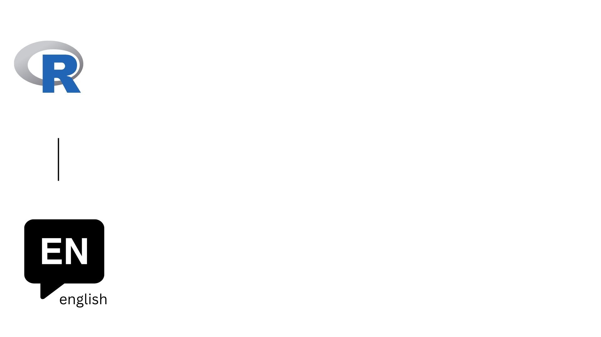
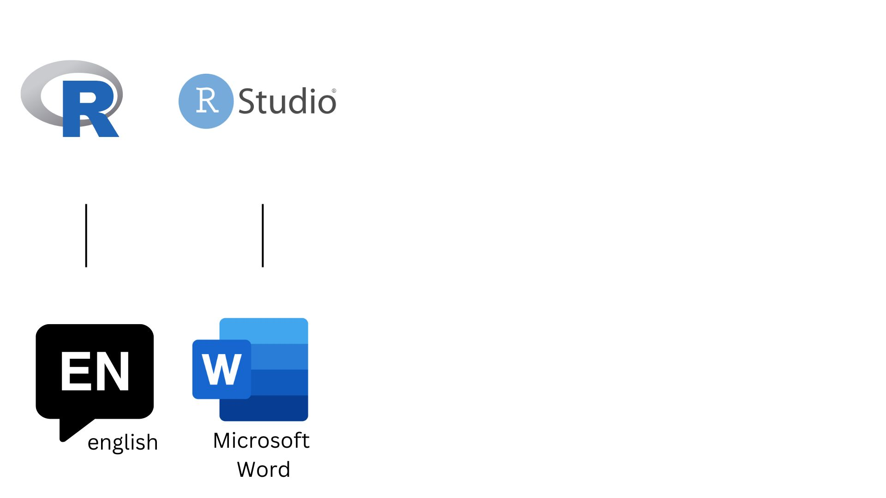
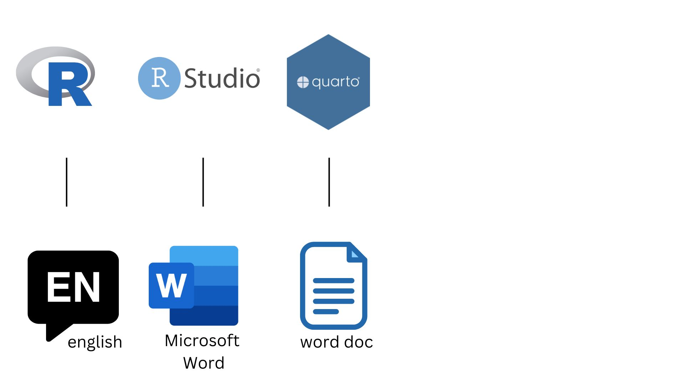
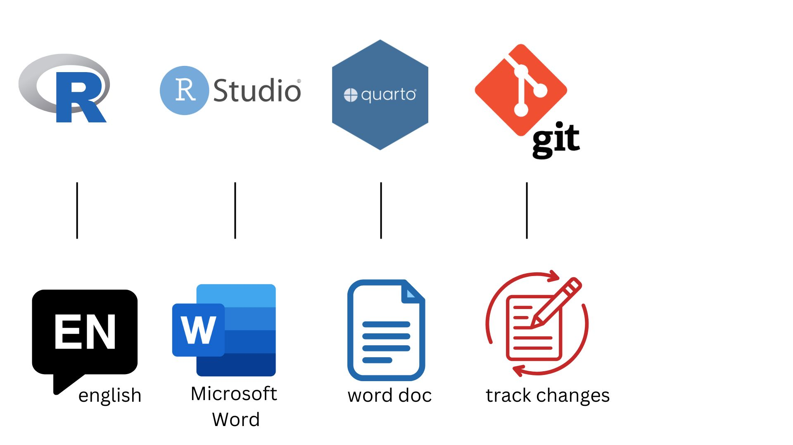
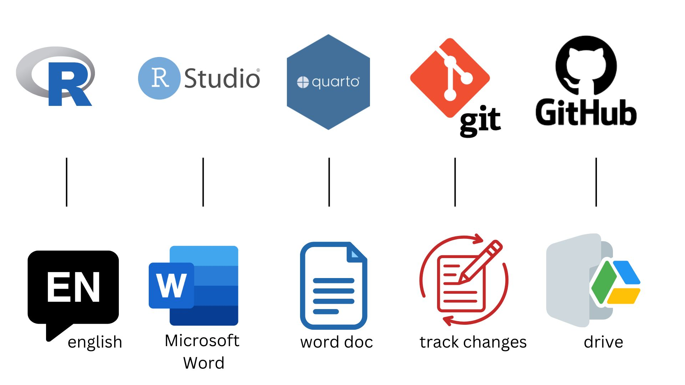
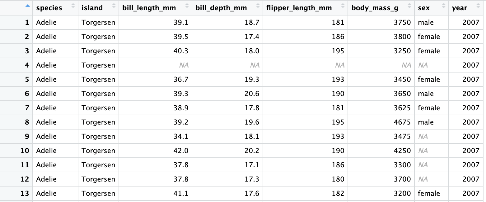
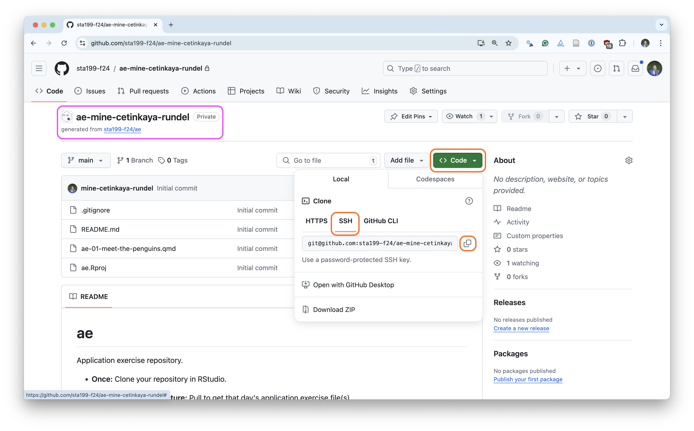

do_this(to_this)
do_that(to_this, to_that, with_those)Meet the Toolkit
Lecture 1
Reminders
If you have not yet finished the
Getting to Know Yousurvey, please do so ASAP!Make your appointments in the Testing Center now!
Any questions about the syllabus??
Today: Course toolkit
Ask so many questions!!!
Course toolkit
Course operation
- Materials: sta199-f24.github.io
- Submission: Gradescope
- Discussion: Ed Discussion
- Gradebook: Canvas
Doing data science
- Computing:
- R
- RStudio
- tidyverse
- Quarto
- R
- Version control and collaboration:
- Git
- GitHub
- Git
Learning goals
By the end of the course, you will be able to…
- gain insight from data
- gain insight from data, reproducibly
- gain insight from data, reproducibly, using modern programming tools and techniques
- gain insight from data, reproducibly and collaboratively, using modern programming tools and techniques
- gain insight from data, reproducibly (with literate programming and version control) and collaboratively, using modern programming tools and techniques
Reproducible data analysis
Reproducibility checklist
How do we make sure a data analysis is “reproducible”?
. . .
Short-term goals:
- Are the tables and figures reproducible from the code and data?
- Does the code actually do what you think it does?
- In addition to what was done, is it clear why it was done?
. . .
Long-term goals:
- Can the code be used for other data?
- Can you extend the code to do other things?
Toolkit for reproducibility
- Scriptability \(\rightarrow\) R
- Literate programming (code, narrative, output in one place) \(\rightarrow\) Quarto
- Version control \(\rightarrow\) Git / GitHub
An Analogy to English

An Analogy to English

An Analogy to English

An Analogy to English

An Analogy to English

R and RStudio
What are R and RStudio?

- R is an open-source statistical programming language
- R is also an environment for statistical computing and graphics
- Packages make R easily extensible

- RStudio is a convenient interface for R called an IDE (integrated development environment), e.g. “I write R code in the RStudio IDE”
- RStudio is not a requirement for programming with R, but it’s very commonly used by R programmers and data scientists
R vs. RStudio: Another Analogy

Source: Modern Dive.
Tour: R + RStudio
Option 1:
Sit back and enjoy the show!
Option 2:
Go to your container and launch RStudio.
Tour recap: R + RStudio

A short list (for now) of R essentials
- Functions are (most often) verbs, followed by what they will be applied to in parentheses:
- Packages are installed with the
install.packages()function and loaded with thelibraryfunction, once per session:
install.packages("package_name")
library(package_name)R essentials (continued)
Data frames: like the spreadsheets of R
- Each row of a data frame is an observation
- Each column of a data frame is a variable

R essentials (continued)
- Use the question mark
?to get help with objects (like data frames and functions):
?function_name- Use the dollar sign
$to access columns
dataframe$column
Note
Generally, you need to use the $ to tell R where to find that column.
R essentials (continued)
- Use the arrow
<-or equals sign=to save objects
x = some_thing
y <- some_other_thing
Note
Check your environment pane for the saved object!
R essentials (continued)
- Look out for warning and error messages!!!
- These are essential for figuring out where your code is going wrong.
Note
If you have trouble understanding what a message is saying, there is a high chance someone has explained the message online.
R packages
Packages: Fundamental units of reproducible R code, including reusable R functions, the documentation that describes how to use them, and sample data1
As of 27 August 2024, there are 21,168 R packages available on CRAN (the Comprehensive R Archive Network)2
We’re going to work with a small (but important) subset of these!
1 Wickham and Bryan, R Packages.
tidyverse
- The tidyverse is a collection of R packages designed for data science
- All packages share an underlying philosophy and a common grammar
Quarto
What is Quarto?
- Fully reproducible reports – each time you render the analysis is ran from the beginning
- Code goes in chunks; narrative (normal text) goes outside of chunks
- A visual editor for a familiar / Google docs-like editing experience
Tour: Quarto
Option 1:
Sit back and enjoy the show!
Option 2:
Go to RStudio and open the document ae-01-meet-the-penguins.qmd.
Tour recap: Quarto

How will we use Quarto?
- Every application exercise, lab, project, etc. is an Quarto document
- You’ll always have a template Quarto document to start with
- The amount of scaffolding in the template will decrease over the semester
Git and GitHub
What are Git and GitHub?

- Git is a version control system – like “Track Changes” features from Microsoft Word, on steroids
- It’s not the only version control system, but it’s a very popular one

GitHub is the home for your Git-based projects on the internet – like DropBox but much, much better
We will use GitHub as a platform for web hosting and collaboration (and as our course management system!)
Versioning - done badly

Versioning - done better

Versioning - done even better
with human readable messages

How will we use Git and GitHub?

How will we use Git and GitHub?

How will we use Git and GitHub?

How will we use Git and GitHub?

Git and GitHub tips
- There are so many and very few people know them all. 99% of the time you will use git to commit, push, and pull:
- commit: tell git to keep track of what changes you’ve made - use a message!!
- push: add the changes to the repository (folder)
- pull: get changes from the repository (folder)
- There is a great resource for working with git and R: happygitwithr.com. Some of the content in there is beyond the scope of this course, but it’s a good place to look for help.
Tour: Git + GitHub
Option 1:
Sit back and enjoy the show!
Option 2:
Go to the course GitHub organization and clone ae-your_github_name repo to your container.
Tour recap: Git + GitHub
Find your application repo, that will always be named using the naming convention
assignment_title-your_github_nameClick on the green “Code” button, make sure SSH is selected, copy the repo URL

Tour recap: Git + GitHub
Once we made changes to our Quarto document, we
went to the Git pane in RStudio
staged our changes by clicking the checkboxes next to the relevant files
committed our changes with an informative commit message
pushed our changes to our application exercise repos
confirmed on GitHub that we could see our changes pushed from RStudio